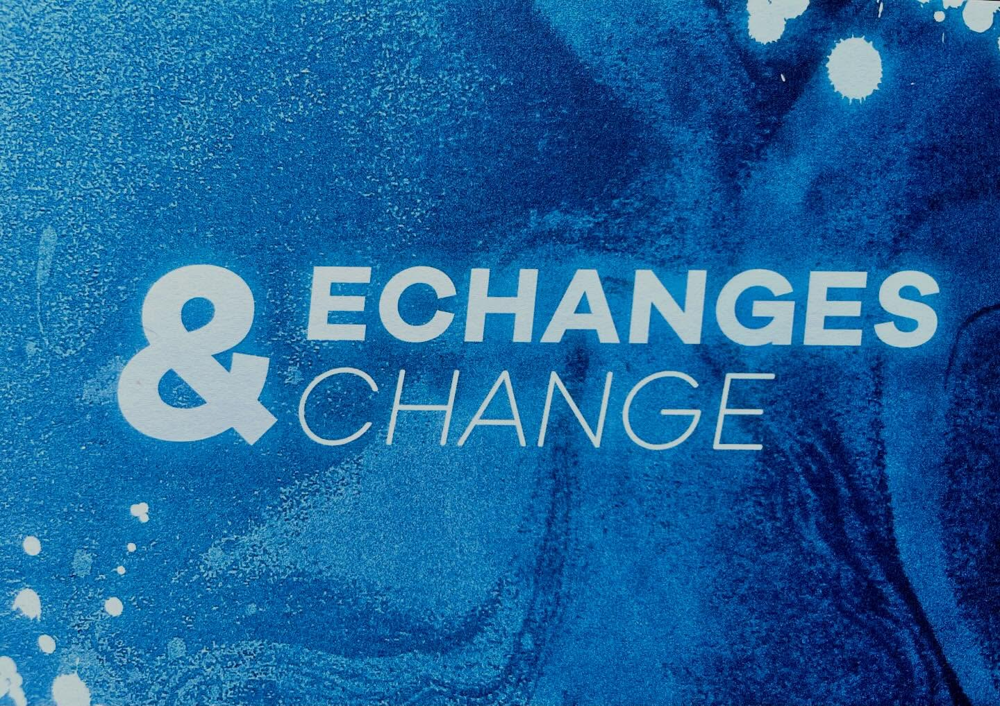

Expositions en cours
Echanges & change
Vernissage le 16 janvier à 18h
Carte blanche aux adolescents et anciens élèves des ateliers pluridisciplinaires de l'école municipale d'art, poursuivant un cursus en école supérieure ou récemment diplômés. En résonance à cette exposition, l'espace Larith accueille aux mêmes dates une pépinière de jeunes artistes plasticiens, anciens élèves de l'EMA, au sein de l'exposition (Ré)génération.
Entrée libre



Expositions à venir
-
Mondes FluidesDate et lieu à préciser